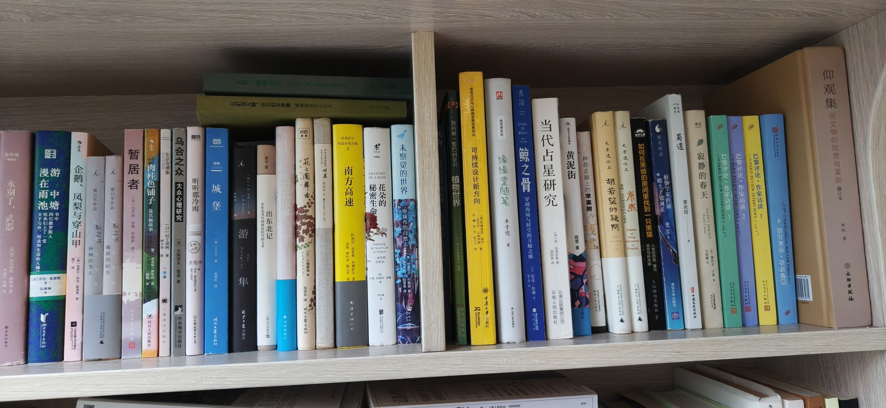

客房第一层右

- 永别了，武器 海明威
- 漫游在雨中池塘：书中四位俄罗斯人给我们上了一堂关于写作、阅读和生活的大师课 乔治·桑德斯著 张琳琳译
- 企鹅、凤梨与穿山甲
- 骆以军作品 脸之书 种树的男人
- 骆以军作品 脸之书 砸碎的时光
- 暂居者 人民文学出版社
- 肉桂色铺子及其他故事 布鲁诺·舒尔茨 四川人民出版社
- 东京奇谭集 【日】村上春树
- 乌合之众：大众心理研究 古斯塔夫·勒庞著 中央编译出版社
- 听听那冷雨 余光中
- 城堡 时代出版社
- 它们没大脑，但它们有智能：植物智能的认识史
- 失敬，植物先生：他们很古老，其实他们很先进
- 游隼 The Peregrine 北京出版社
- 出东北记：从东北书写到算法时代的文学 黄平 上海文艺出版社
- 马可瓦尔多
- 花之圆舞曲 川端康成 陆求实译 时代文艺出版社
- 南方高速 胡里奥·科塔萨尔著 金灿林叶青陶玉平译 南海出版公司
- 花朵的秘密生命：一朵花的自然史 ANATOMY OF A ROSE Exploring the Secret Life of Flowers
- 未察觉的世界：一座城市的自然志 纳撒尼尔·约翰逊
- 死海
- 我的第一套百科全书：植物世界
- 可持续设计新方向 迈克尔·理查兹 重庆大学出版社
- 插图精装版 缘缘堂随笔 丰子恺 江苏人民出版社
- 鲸之骨：穿越海陆与时空的寻鲸之旅 【美】尼克·彭森
- 当代占星研究 苏·汤普金斯著 胡因梦译 云南出版集团公司 云南人民出版社
- 黄泥街 残雪著
- 种在走廊上的苹果树
- 史景迁作品 胡若望的疑问
- 史景迁作品 康熙：重构一位中国皇帝的内心世界
- 如何在黑暗的房间里找到一只黑猫：自恋与秩序感 人类的恐惧、偏见 人民邮电出版社
- 果壳阅读 植物学家的锅略大于银河系 史军 清华大学出版社
- 蜀道 黄炎培 中国文史出版社
- 寂静的春天 SILENT SPRING Rachel Carson
- 巴黎评论·作家访谈3 PARIS REVIEW INTERVIEWS vol.3
- 巴黎评论·作家访谈2 PARIS REVIEW INTERVIEWS vol.2
- 巴黎评论·作家访谈1 PARIS REVIEW INTERVIEWS vol.1
- 巴黎评论·作家访谈4 PARIS REVIEW INTERVIEWS vol.4
- 仰观集：古文物的欣赏与鉴别 孙机 文物出版社
共 39 本书，上传于 2026-10-03 09:24:54。